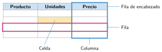

Tablas
Criterios: 4a, 4c, 4e
🤔 Pienso10 min
Qué hago aquí: Piensa un momento y contesta con lo que ya sabes. No pasa nada si no lo sabes: es para empezar.
Haz en el aire (o en papel) una tabla con tu horario de clase. ¿Cuántas filas y columnas necesitas? ¿Qué casillas juntarías?
📖 Leo y aprendo40 min
Qué hago aquí: Lee despacio, mira los dibujos y los ejemplos, y quédate con la idea clave del final.
Una tabla ordena los datos en filas y columnas; cada cruce es una celda. Se inserta en Insertar › Tabla, eligiendo el número de filas y columnas, o se dibuja con Dibujar tabla.

Con el cursor dentro de una tabla aparecen dos pestañas:
- Diseño de tabla: estilos de tabla, sombreado, bordes y Fila de encabezado.
- Disposición: insertar o eliminar filas y columnas, Combinar celdas, Dividir celdas, alto y ancho, alineación del texto en la celda, dirección del texto, Repetir filas de título y Fórmula.
Para moverte de celda en celda,

; en la última celda,
añade una fila nueva. Convertir texto en tabla (Insertar › Tabla) transforma una lista separada por tabulaciones, comas o punto y coma en una tabla.
Las tablas de Word hacen cálculos sencillos con Disposición › Fórmula: =SUM(ABOVE) suma la columna de arriba. Si hay muchos cálculos, es mejor Insertar › Tabla › Hoja de cálculo de Excel, que mete una hoja de Excel dentro del documento.
✏️ Hago220 min
Qué hago aquí: Haz las actividades en orden. Empieza siempre por las básicas.
¿Qué opción usarías? a) Juntar las celdas del título; b) que la fila de títulos salga en todas las páginas; c) poner el texto en vertical; d) añadir una fila al final.
Haz tu horario de clase en una tabla: título con celdas combinadas, días en la fila de encabezado, horas en la primera columna, colores distintos por módulo y el recreo en una fila combinada.
Escribe esta lista separando los datos con tabulaciones y conviértela en tabla: Código, Producto, Precio / P01, Folios A4, 3,55 / P02, Bolígrafos, 0,60 / P03, Sobres, 0,25. Aplica un estilo de tabla.
Haz la tabla de un pedido con cantidad, precio e importe. Calcula el total con Fórmula. Cambia una cantidad y actualiza el campo.
Haz el modelo de albarán de tu empresa en Word con una tabla: logo y datos arriba, tabla de productos con fila de encabezado y bordes solo horizontales, y zona de firma de quien recibe.
Inserta una hoja de cálculo de Excel dentro de un documento con las ventas de tres meses y su total. ¿Qué ventaja tiene frente a una tabla de Word?
🚀 Amplío (si quieres saber más)
Qué hago aquí: ¿Has terminado? Lee la curiosidad o elige el reto. Es voluntario.
Haz una tabla sin bordes para maquetar una tarjeta de visita: el logo en una celda y los datos en otra. ¿Por qué se usan tablas invisibles para maquetar?
✅ Compruebo10 min
Qué hago aquí: Contesta sin mirar la ficha y marca cómo lo llevas.